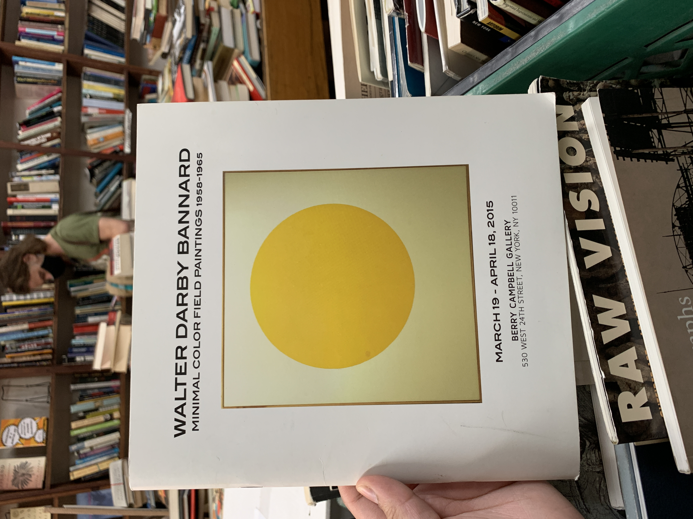

Minimal Color Field Paintings 1958-1965
Booklet by Walter Darby Bannard
man
i came across this at the mercer street books & records and i
hate myself
for not buying it right away. a regret for sure. i think about this booklet so often and it has
inspired
so many of my color palletes. i love the minimalism of it and hope to make something similar one day
